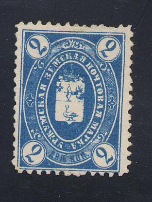
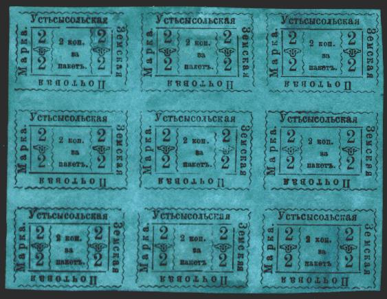
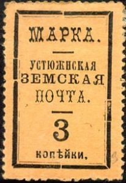
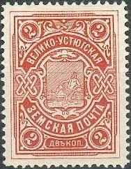

Return To Catalogue - Go to Zemstvos overview - Russia
Note: on my website many of the
pictures can not be seen! They are of course present in the
catalogue;
contact me if you want to purchase it.
2 k blue 3 k green


(Cancels, reduced sizes)
2 k red


2 k black and blue 2 k red (1899, 3 types)

2 k brown

3 k black on yellow
Forgeries of this stamp exist (I suspect the above stamp to be a forgery as well). The Barefoot catalogue appears to show such a forgery on the front (source: Rossica Journal Number 118, April 1992; http://ufdc.ufl.edu/UF00020235/00035/12j). The cyrillic 'L' on top does not have the straight line at the left. The 'Z' of 'ZEM' is also different.



(Note the different borders!)
Reduced size
2 k black on green 3 k black on yellow 3 k black on orange 3 k black on red
2 k red


2 k red 2 k red, blue and brown (1893) 2 k red, green and brown (1897) 2 k red, brown and violet (2 sizes, 1900)

5 k red, blue and brown (2 sizes)
2 k brown 2 k green (1915) 5 k blue (exists imperforated) 5 k red (1915)

(Reduced size)
3 k black on orange (with lines as outer border) 3 k black on orange (with ornaments as outer border, various types) 3 k black on yellow (1893) 3 k black on grey (1893) 3 k black on green (1893) 3 k black on lilac (1893) 3 k black on violet (1898)


2 k black on lilac (3 types, imperforated) 2 k black on violet (larger stamp, imperforated, 1887) 2 k black on violet (perforated, 1887) 2 k black on olive (perforated, 1888)
Forgeries: I know that a bogus(?) imperforate value of 2 k violet (with white letters) has been forged by a forger from Hialeah Florida; large numbers of these forgeries are offered on Ebay. General remarks about these forgeries: the forger has probably used a computer scanner and printer, the details are mostly lost in most of his forgeries, the paper is modern and the size does in general not correspond to genuine stamps.


1 k blue 1 k lilac (1897) 2 k blue (1897) 5 k red
5 k (embossed) 5 k black (1878)
1901 Arms

2 k red


{kind=link}
{kind=link}